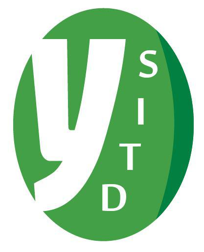

關於我們
全名為 Young Students' IT Discussion
一個從 2014 年成立在 Freenode IRC Network 上的聊天頻道
成立目的
做一個以推廣開源精神為基本，給學生能討論各項資訊、電子等等主題，以及問答的地方
更是一個把人推坑進 FLOSS (Free/Libre/Open Source Software) 社群的奇妙聊天室
宗旨
不要 RTFM (Read The F__king Manual) 或 STFG (Search The F__king Google)
即使大家不知道，也可以一起動手來想解決方法
